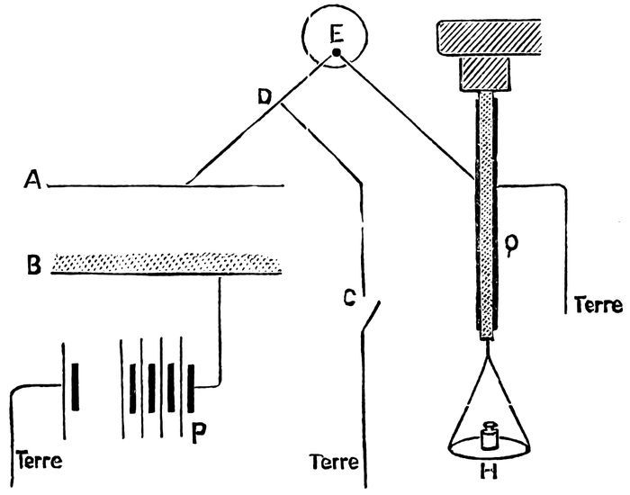
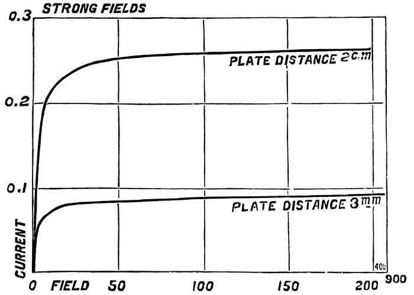
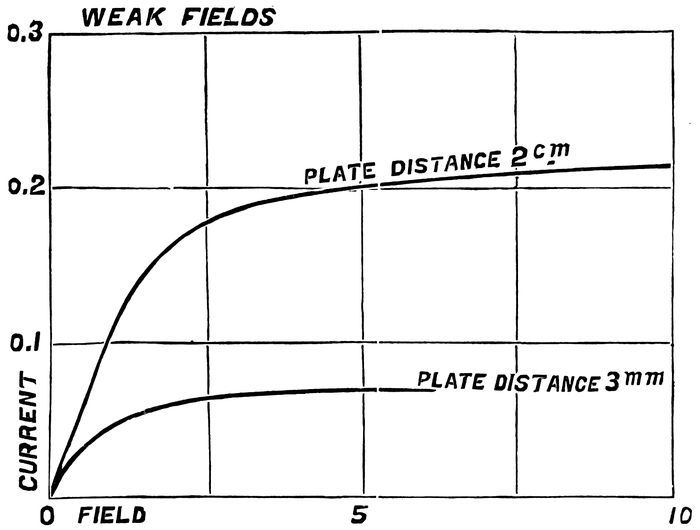

Chapter 3: CHAPTER I. Radio-activity of Uranium and Thorium. Radio-active Minerals¶
Becquerel Rays.—The uranium rays discovered by M. Becquerel act upon photographic plates screened from the light; they can penetrate all solid, liquid, and gaseous substances, provided that the thickness is sufficiently reduced; in passing through a gas, they cause it to become a feeble conductor of electricity.
These properties of the uranium compounds are not due to any known cause. The radiation seems to be spontaneous; it loses nothing in intensity, even on keeping the compounds in complete darkness for several years; hence there is no question of the phosphorescence being specially produced by light.
The spontaneity and persistence of the uranium radiation appear as a quite unique physical phenomenon. M. Becquerel kept a piece of uranium for several years in the dark, and he has affirmed that at the end of this time the action upon a photographic plate had not sensibly altered. MM. Elster and Geitel made a similar experiment, and also found the action to remain constant.
I measured the intensity of radiation of uranium by the effect of this radiation on the conductivity of air. The method of measurement will be explained later. I also obtained figures which prove the persistence of radiation within the limits of accuracy of the experiments.
For these measurements a metallic plate was used covered with a layer of powdered uranium; this plate was not otherwise kept in the dark; this precaution, according to the experimenters already quoted, being of no importance. The number of measurements taken with this plate is very great, and they actually extend over a period of five years.
Some researches were conducted to discover whether other substances were capable of acting similarly to the uranium compounds. M. Schmidt was the first to publish that thorium and its compounds possess exactly the same property. A similar research, made contemporaneously, gave me the same result. I published this not knowing at the time of Schmidt’s publication.
We shall say that uranium, thorium, and their compounds emit Becquerel rays. I have called radio-active those substances which generate emissions of this nature. This name has since been adopted generally.
In their photographic and electric effects, the Becquerel rays approximate to the Röntgen rays. They also, like the latter, possess the faculty of penetrating all matter. But their capacity for penetration is very different; the rays of uranium and of thorium are arrested by some millimetres of solid matter, and cannot traverse in air a distance greater than a few centimetres; this at least is the case for the greater part of the radiation.
The researches of different physicists, and primarily of Mr. Rutherford, have shown that the Becquerel rays undergo neither regular reflection, nor refraction, nor polarisation.
The feeble penetrating power of uranium and thorium rays would point to their similarity to the secondary rays produced by the Röntgen rays, and which have been investigated by M. Sagnac, rather than to the Röntgen rays themselves.
For the rest, the Becquerel rays might be classified as cathode rays propagated in the air. It is now known that these different analogies are all legitimate.
3.1 Measurement of the Intensity of Radiation¶

The method employed consists in measuring the conductivity acquired by air under the action of radio-active bodies; this method possesses the advantage of being rapid and of furnishing figures which are comparable. The apparatus employed by me for the purpose consists essentially of a plate condenser, A B (Fig. 1). The active body, finely powered, is spread over the plate B, making the air between the plates a conductor. In order to measure the conductivity, the plate B is raised to a high potential by connecting it with one pole of a battery of small accumulators, P, of which the other pole is connected to earth. The plate A being maintained at the potential of the earth by the connection C D, an electric current is set up between the two plates. The potential of plate A is recorded by an electrometer, E. If the earth connection be broken at C, the plate A becomes charged, and this charge causes a deflection of the electrometer. The velocity of the deflection is proportional to the intensity of the current, and serves to measure the latter.
But a preferable method of measurement is that of compensating the charge on plate A, so as to cause no deflection of the electrometer. The charges in question are extremely weak; they may be compensated by means of a quartz electric balance, Q, one sheath of which is connected to plate A and the other to earth. The quartz lamina is subjected to a known tension, produced by placing weights in a plate, π; the tension is produced progressively, and has the effect of generating progressively a known quantity of electricity during the time observed. The operation can be so regulated that, at each instant, there is compensation between the quantity of electricity that traverses the condenser and that of the opposite kind furnished by the quartz. In this way, the quantity of electricity passing through the condenser for a given time, i.e., the intensity of the current, can be measured in absolute units. The measurement is independent of the sensitiveness of the electrometer.
In carrying out a certain number of measurements of this kind, it is seen that radio-activity is a phenomenon capable of being measured with a certain accuracy. It varies little with temperature; it is scarcely affected by variations in the temperature of the surroundings; it is not influenced by incandescence of the active substance. The intensity of the current which traverses the condenser increases with the surface of the plates. For a given condenser and a given substance the current increases with the difference of potential between the plates, with the pressure of the gas which fills the condenser, and with the distance of the plates (provided this distance be not too great in comparison with the diameter). In every case, for great differences of potential the current attains a limiting value, which is practically constant. This is the current of saturation, or limiting current. Similarly, for a certain sufficiently great distance between the plates the current hardly varies any longer with the distance. It is the current obtained under these conditions that was taken as the measure of radio-activity in my researches, the condenser being placed in air at atmospheric pressure.
I append curves which represent the intensity of the current as a function of the field established between the plates for two different plate distances. Plate B was covered with a thin layer of powdered metallic uranium; plate A, connected with the electrometer, was provided with a guard-ring.


Fig. 2 shows that the intensity of the current becomes constant for high potential differences between the plates. Fig. 3 represents the same curves on another scale, and comprehends only relative results for small differences of potential. At the origin, the curve is rectilinear; the ratio of the intensity of the current to the difference of potential is constant for weak forces, and represents the initial conduction between the plates. Two important characteristic constants of the observed phenomenon are therefore to be recognised:—(1) The initial conduction for small differences of potential; (2) the limiting current for great potential differences. The limiting current has been adopted as the measure of the radio-activity.
Besides the difference of potential established between the two plates, there exists between them an electromotive force of contact, and these two sources of current combine their effects; for this reason, the absolute value of the intensity of the current changes with the sign of the external difference of potential. In every case, for considerable potential differences, the effect of the electromotive force of contact is negligible, and the intensity of the current is therefore the same whatever be the direction of the field between the plates.
The investigation of the conductivity of air and other gases subjected to the action of Becquerel rays has been undertaken by several physicists. A very complete research upon the subject has been published by Mr. Rutherford.
The laws of the conductivity produced in gases by the Becquerel rays are the same as those found for the Röntgen rays. The mechanics of the phenomenon appear to be the same in both cases. The theory of ionisation of the gases by the action of the Röntgen or Becquerel rays agrees well with the observed facts. This theory will not be put forward here. I will merely record the results to which they point:—
Firstly, the number of ions produced per second in the gas is considered proportional to the energy of radiation absorbed by the gas.
Secondly, in order to obtain the limiting current relatively to a given radiation, it is necessary, on the one hand, to cause complete absorption of this radiation by the gas by employing a sufficient mass of it; on the other hand, it is necessary for the production of the current to use all the ions generated by establishing an electric field of such strength that the number of the ions which recombine may be a negligible fraction of the total number of ions produced in the same time, most of which are carried by the current to the electrodes. The strength of the electric field necessary to give this result is proportional to the amount of ionisation.
According to the recent researches of Mr. Townsend, the phenomenon is more complex when the pressure of the gas is low. At first the current appears to approach to a constant limiting value with increasing difference of potential; but after a certain point has been reached, the current begins again to increase with the field, and with very great rapidity. Mr. Townsend ascribes this increase to a new ionisation produced by the ions themselves when, under the action of the electric field, they acquire a velocity such that a molecule of gas encountering one of them becomes broken down into its constituent ions. A strong electric field and a low pressure are favourable to the production of this ionisation by ions already present, and, as soon as the action is set up, the intensity of the current increases uniformly with the field between the plates. The limiting current could, therefore, only be obtained under conditions of ionisation of which the intensity does not exceed a certain value, and in such a manner that saturation corresponds to fields in which, from multiplicity of ions, ionisation can no longer take place. This condition has occurred in my experiments.
The order of magnitude of the saturation currents obtained with uranium compounds is 10–11 ampères for a condenser in which the plates have a diameter of 8 c.m., and are at a distance of 3 c.m. Thorium compounds give rise to currents of the same order of magnitude, and the activity of the oxides of uranium and thorium is very similar.
3.2 Radio-activity of the Compounds of Uranium and Thorium¶
The following are the figures I obtained with different uranium compounds. I have represented the intensity of the current in ampères by the letter i:—
| i × 1011. | |
|---|---|
| Metallic uranium (containing a little carbon) | 2·3 |
| Black oxide of uranium, U2O5 | 2·6 |
| Green oxide of uranium, U3O4 | 1·8 |
| Hydrated uranic acid | 0·6 |
| Uranate of sodium | 1·2 |
| Uranate of potassium | 1·2 |
| Uranate of ammonium | 1·3 |
| Uranium sulphate | 0·7 |
| Sulphate of uranium and potassium | 0·7 |
| Nitrate of uranium | 0·7 |
| Phosphate of copper and uranium | 0·9 |
| Oxysulphide of uranium | 1·2 |
The thickness of the layer of the uranium compound used has little effect, provided that the layer is uniform. The following illustrate this point:—
| Thickness of layer. M.m. | i × 1011. | |
|---|---|---|
| Uranium oxide | 0·5 | 2·7 |
| Uranium oxide | 3·0 | 3·0 |
| Ammonium uranate | 0·5 | 1·3 |
| Ammonium uranate | 3·0 | 1·4 |
It may be concluded from this that the absorption of uranium rays by the substance which generates them is very great, since the rays proceeding from deep layers produce no significant effect.
The figures I obtained with thorium compounds enable me to state:—
Firstly, that the thickness of the layer used has considerable effect, especially in the case of the oxide.
Secondly, that the action is only regular if a sufficiently thin layer is used (e.g., 0·25 m.m.). On the contrary, when a thick layer of the substance is used (6 m.m.), the figures obtained vary between two extreme limits, especially in the case of the oxide:—
| Thickness of layer. M.m. | i × 1011. | |
|---|---|---|
| Thorium oxide | 0·25 | 2·2 |
| Thorium oxide | 0·5 | 2·5 |
| Thorium oxide | 2·5 | 4·7 |
| Thorium oxide | 3·0 | 5·5 (mean) |
| Thorium oxide | 6·0 | 5·5 (mean) |
| Thorium sulphate | 0·25 | 0·8 (mean) |
There is here some cause of irregularities which do not exist in the case of the uranium compounds. The figures obtained for a layer of oxide 6 m.m. thick varied between 3·7 and 7·3.
The experiments that I made on the absorption of uranium and thorium rays showed that those of thorium are more penetrating than those of uranium, and that the rays emitted by the oxide of thorium in a thick layer are more penetrating than those emitted by a thin layer of the same. The following figures (p. 13) give the fraction of the radiation transmitted by a sheet of aluminium 0·01 thick.
With the uranium compounds, the absorption is the same whatever be the compound used, which leads to the conclusion that the rays emitted by the different compounds are of the same nature.
Radio-active substance. Fraction of radiation transmitted by the sheet.
Uranium 0·18
Uranium oxide, U2O5 0·20
Uranate of ammonium 0·20
Phosphate of uranium and copper 0·21
Thorium oxide of thickness 0·25 m.m. 0·38
Thorium oxide of thickness 0·5 m.m. 0·47
Thorium oxide of thickness 3·0 m.m. 0·70
Thorium oxide of thickness 0·60 m.m. 0·70
Thorium sulphate 0·25 m.m. 0·38
The characteristics of the thorium radiation have formed the subject of very complete publications. Mr. Owens has demonstrated that a uniform current is only obtained after some time has elapsed, with an enclosed apparatus, and that the intensity of the current is greatly reduced under the influence of a current of air (which does not occur with the compounds of uranium). Mr. Rutherford has made similar experiments, and has explained them by the proposition that thorium and its compounds produce, besides the Becquerel rays, another emanation, composed of extremely minute particles, which remain radio-active for some time after their emission, and are capable of being swept along by a current of air.
The characteristics of the thorium radiation, which have reference to the thickness of the layer employed and to the action of air currents, have an intimate connection with the phenomenon of the radio-activity induced, and of its propagation from place to place. This phenomenon was observed for the first time with radium, and will be described later.
The radio-activity of thorium and uranium compounds appears as an atomic property. M. Becquerel has already observed that all uranium compounds are active, and had concluded that their activity was due to the presence of the element uranium; he also demonstrated that uranium was more active than its salts. I have investigated, from this point of view, the compounds of thorium and uranium, and have taken a great many measurements of their activity under different conditions. The result of all these determinations shows the radio-activity of these substances to be decidedly an atomic property. It seems to depend upon the presence of atoms of the two elements in question, and is not influenced by any change of physical state or chemical decomposition. The chemical combinations and mixtures containing uranium or thorium are active in proportion to the amount of the metal contained, all inactive material acting as inert bodies and absorbing the radiation.
3.3 Is Atomic Radio-activity a general Phenomenon?¶
As I have said above, I made experiments to discover whether substances other than compounds of uranium and thorium were radio-active. I undertook this research with the idea that it was scarcely probable that radio-activity, considered as an atomic property, should belong to a certain kind of matter to the exclusion of all other. The determinations I made permit me to say that, for chemical elements actually considered as such, including the rarest and most hypothetical, the compounds I investigated were always at least 100 times less active in my apparatus than metallic uranium.
The following is a summary of the substances experimented upon, either as the element or in combination:—
1. All the metals or non-metals easily procurable, and some, more rare, pure products obtained from the collection of M. Etard, at the Ecole de Physique et de Chimie Industrielles de la Ville de Paris.
2. The following rare bodies:—Gallium, germanium, neodymium, praseodymium, niobium, scandium, gadolinium, erbium, samarium, and rubidium (specimens lent by M. Demarçay), yttrium, ytterbium (lent by M. Urbain).
3. A large number of rocks and minerals.
Within the limits of sensitiveness of any apparatus, I found no simple substance, other than uranium and thorium, possessing atomic radio-activity. It will be suitable to add a few words here concerning phosphorus. White moist phosphorus, placed between the plates of the condenser, causes the air between the plates to conduct. However, I do not consider this body radio-active in the same manner as thorium and uranium. For, under these conditions, phosphorus becomes oxidised and emits luminous rays, whilst uranium and thorium compounds are radio-active without showing any chemical change which can be detected by any known means. Further, phosphorus is not active in the red variety, nor in a state of combination.
In a recent work, M. Bloch has demonstrated that phosphorus, undergoing oxidation in air, gives rise to slightly motile ions, which make the air conduct, and cause condensation of aqueous vapour.
Uranium and thorium are elements which possess the highest atomic weights (240 and 232); they occur frequently in the same minerals.
3.4 Radio-active Minerals¶
I have examined many minerals in my apparatus; certain of them gave evidence of radio-activity, e.g., pitchblende, thorite, orangite, fergusonite, cleveite, chalcolite, autunite, monazite, &c. The following is a table giving in ampères the intensity, i, of the current obtained with metallic uranium and with different minerals:—
i × 1011.
Uranium 2·3
Pitchblende from Johanngeorgenstadt 8·3
Pitchblende from Joachimsthal 7·0
Pitchblende from Pzibran 6·5
Pitchblende from Cornwallis 1·6
Cleveite 1·4
Chalcolite 5·2
Autunite 2·7
Various thorites 0·1
0·3
0·7
1·3
1·4
Orangite 2·0
Monazite 0·5
Xenotime 0·03
Æschynite 0·7
Fergusonite (two samples) 0·4
0·1
Samarskite 1·1
Niobite (two samples) 0·1
0·3
Tantalite 0·02
Carnotite 6·2
The current obtained with orangite (native oxide of thorium) varied greatly with the thickness of the layer. By increasing this thickness from 0·25 m.m. to 6 m.m. the current increased from 1·8 to 2·3.
All the minerals which showed radio-activity contained uranium or thorium: their activity is therefore not surprising, but the intensity of the action in certain cases is unexpected. Thus pitchblendes (ores of uranium oxide) are found which are four times as active as metallic uranium. Chalcolite (double phosphate of copper and uranium) is twice as active as uranium. Autunite (phosphate of uranium and calcium) is as active as uranium. These facts do not accord with previous conclusions, according to which no mineral should be so active as thorium or uranium.
To throw light on this point, I prepared artificial chalcolite by the process of Debray, starting with the pure products. The process consists in mixing a solution of uranium nitrate with a solution of copper phosphate in phosphoric acid and warming to 50° or 60°. After some time, crystals of chalcolite appear in the liquid.
Chalcolite thus obtained possesses a perfectly normal activity, given by its composition; it is two and a-half times less active than uranium.
It therefore appeared probable that if pitchblende, chalcolite, and autunite possess so great a degree of activity, these substances contain a small quantity of a strongly radio-active body, differing from uranium and thorium and the simple bodies actually known. I thought that if this were indeed the case, I might hope to extract this substance from the ore by the ordinary methods of chemical analysis.